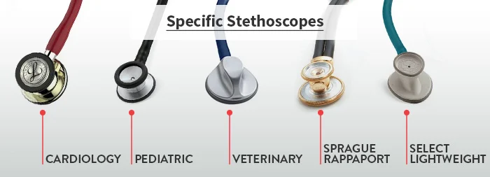

Anatomy

It consists of three main parts: earpieces, tubing, and a chest piece.
Earpieces: These are the parts of the stethoscope that are placed in the healthcare professional's ears. They are usually made of soft rubber or plastic to provide a comfortable fit and prevent sound leakage.
Tubing: The tubing is the long, flexible part of the stethoscope that connects the earpieces to the chest piece. It is typically made of rubber or PVC and is designed to transmit sound waves from the chest piece to the earpieces.
Chest piece: The chest piece is the part of the stethoscope that is placed on the patient's body to listen to sounds. It consists of two sides: the diaphragm and the bell. The diaphragm is a flat, circular disc that is used to listen to high-frequency sounds, such as those produced by the heart and lungs. The bell is a smaller, cup-shaped attachment that is used to listen to low-frequency sounds, such as those produced by the digestive system.
Working
- The stethoscope works by amplifying the sound waves generated by the body's internal organs, such as the heart and lungs, and transmitting them to the medical professional's ears.
- The stethoscope consists of a chest piece or diaphragm, which is placed on the patient's skin over the organ of interest, and one or two tubes that carry the sound waves from the chest piece to the earpieces worn by the medical professional.
- When the chest piece is placed on the patient's skin, it forms an airtight seal, which allows the sound waves generated by the organs to enter the chest piece. The sound waves then travel through the tubes to the earpieces, where they are amplified and heard by the medical professional.
- The diaphragm and the tubes are designed to filter out external noise, so that the medical professional can focus on the internal sounds of the body. By listening to these sounds, the medical professional can detect any abnormalities, such as irregular heartbeats or abnormal lung sounds, which can indicate underlying health problems.
- Overall, the stethoscope is a simple yet essential tool for medical diagnosis and monitoring, allowing medical professionals to listen to the internal sounds of the body and detect any potential health issues
Types
There are several types of stethoscopes, including:
- Cardiology stethoscope: This stethoscope is designed for use by cardiologists and other specialists who need to hear faint heart sounds. It typically has a larger chestpiece and longer tubing than a standard stethoscope.
- Pediatric stethoscope: This stethoscope is designed for use on infants and children. It typically has a smaller chestpiece and shorter tubing than a standard stethoscope.
- Veterinary stethoscope: This stethoscope is designed for use on animals. It may have a specialized chestpiece and tubing that is more durable than a standard stethoscope.
- Sprague Rappaport Stethoscope: It is five stethoscopes in one for a full range of diagnostic applications and is traditionally trusted to detect faint heart sounds and murmurs. This classic design allows healthcare professionals to assess adult, pediatric, and infant patients using just one stethoscope.
- Select lightweight stethoscope: The 3M Littmann Lightweight II S.E. Stethoscope is an ideal entry-level instrument, with a tunable diaphragm, dual-sided chestpiece, and reliable acoustic performance. Its teardrop shape makes auscultation around blood pressure cuffs easier. The colors shown online are approximations.
Block diagram of stethoscope

Applications
- Heart sounds: A stethoscope can be used to listen to the heartbeat and detect abnormalities such as irregular rhythms, murmurs, or heart valve problems.
- Lung sounds: It can be used to listen to the sounds of breathing and detect abnormalities such as wheezing, crackles, or fluid buildup in the lungs.
- Gastrointestinal sounds: It also used to listen to the sounds of the digestive system, including bowel sounds and abdominal bruits.
- Blood pressure measurement: It is often used in conjunction with a blood pressure cuff to measure blood pressure.
- Fetal heartbeat: It can be used to listen to the heartbeat of a fetus during pregnancy.